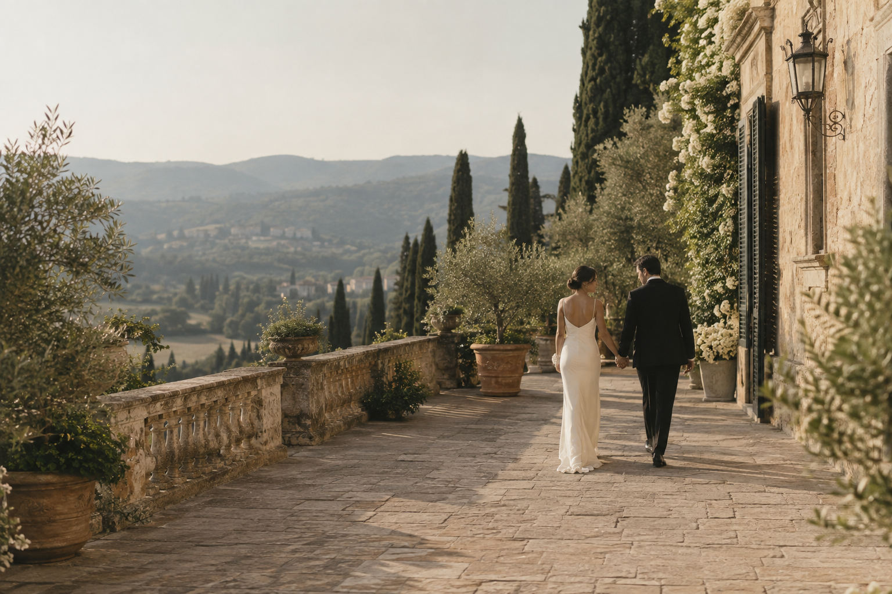

Mówimy „tak”
Ceremonia w ogrodzie.
Bądźcie z nami chwilę wcześniej.
Zapraszamy do naszego ogrodu wspomnień.

Ceremonia w ogrodzie.
Bądźcie z nami chwilę wcześniej.
Kolacja, toasty i rozmowy.
Czas tylko dla nas i dla Was.
Muzyka, światła i parkiet.
Zostańcie z nami jak najdłużej.
Ogród, ciepłe światło i przestrzeń na wspomnienia.
Konstancin-Jeziorna
Przykładowe miejsce dla tej koncepcji.
Prosimy o odpowiedź do 12 maja 2027.